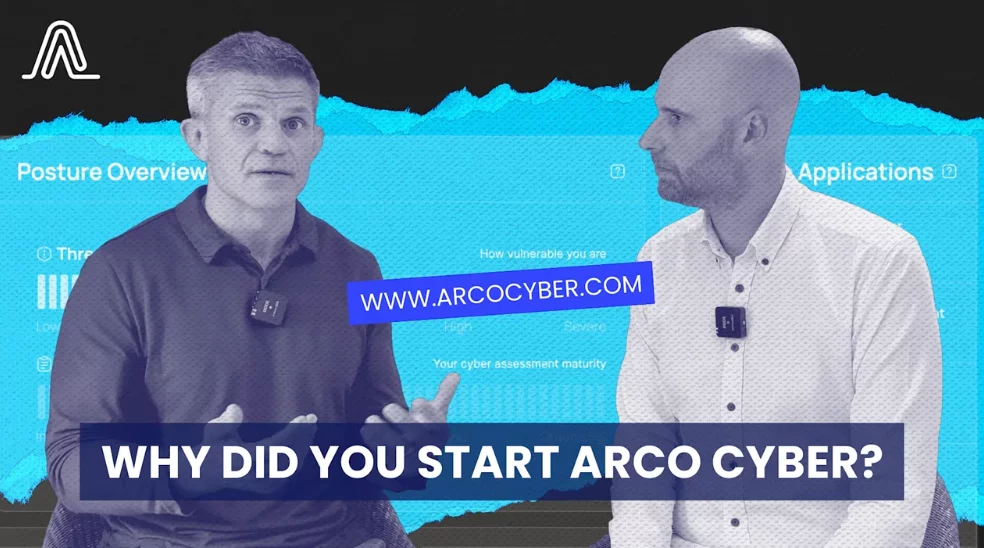

How B2B companies turn a podcast into a pipeline of content and leads
Most B2B podcasts are judged on the wrong number.
Downloads are easy to count, so they become the measure of success. But a B2B company doesn't need a hit show. It needs the right people to hear the right conversations, and it needs every recording to keep working long after the episode goes out.
Done properly, a podcast becomes two things at once: a steady source of content for your marketing, and a reason to start conversations with the people you most want to do business with. Here's how to set one up so it does both.
Start with who you want to reach
Before you think about a name, a format or a guest list, decide who the podcast is for. Not "people in our industry", but the specific roles who buy from you, influence the decision or sign it off.
Then build your topics around their problems, not your product. What are they worried about this year? What do they argue about? What questions do they ask your sales team again and again? A show that answers those questions earns attention. A show that talks about your features doesn't.
If you're still deciding whether a podcast is right for you at all, start with Does your business really need a podcast?
Your guest list is a prospect list
This is the part most companies miss. Every guest you invite is an hour of focused, friendly conversation with someone you chose.
Invite people from the companies you'd like to work with, alongside customers, partners and respected voices in your market. Ask them about their experience, their challenges and their view of where things are heading. People rarely turn down the chance to share their expertise, and very few would take an hour-long sales meeting with a stranger.
The rule is simple: the episode is about the guest, not about you. Don't turn the recording into a pitch. The relationship is the point, and it tends to lead somewhere on its own. A thank-you note, a few clips they can share and a follow-up coffee are often all it takes.

One recording, a month of content
A single 45-minute conversation holds far more than one episode. Plan the recording with that in mind, and the content almost writes itself:
- The full episodePublished as video on YouTube and Spotify, and as audio on Apple Podcasts and the other platforms.
- Short clipsSix to ten of the strongest moments, captioned and cut for LinkedIn, YouTube Shorts and Instagram. Here's what makes a moment worth clipping.
- Articles from the transcriptOne in-depth article, plus shorter pieces that each answer a single question your buyers search for.
- Social posts and quotesWritten for your company page, your hosts and, importantly, your guest.
- Email and nurture contentA newsletter feature, and clips that slot into the emails you already send prospects.
- Sales materialShort clips that answer common objections, ready for your team to send.
That's a month of genuinely original material from one afternoon of recording. Instead of asking "what should we post this week?", your marketing team starts with more than it can use.
Give every piece somewhere to go
Content only becomes pipeline when it leads somewhere. Every clip, article and post should point to a next step that makes sense for the person seeing it.
- Host episodes on your own website. An episode page with the video, a summary and key takeaways gives search engines something to index and gives you somewhere to send people that you control.
- Offer a sensible next step. A related guide, a newsletter sign-up or a short call. Not every listener is ready for a demo, but many are ready for the next useful thing.
- Link clips back to the full conversation. A clip is a trailer. Its job is to get the right people to watch the rest.
Make it easy for guests to share
Your guests have networks full of people like them, which usually means people like your buyers. Most are happy to share an episode they're proud of, but they're busy.
So do the work for them. Send each guest two or three ready-made clips, a suggested post and the links, on the day the episode goes live. It takes ten minutes and it can put the conversation in front of an audience you'd struggle to reach any other way.
Put the podcast in your sales team's hands
The most underused audience for a B2B podcast is your own sales team. A good episode does things a brochure can't: it shows how your people think, and it lets prospects hear from someone like them.
- Before a call, send a relevant episode or clip so the prospect arrives already warmed up.
- After a call, follow up with a clip that answers the question they raised.
- When a deal stalls, share a conversation with a customer who faced the same doubts.
Tell the sales team what's coming, and give them a simple library of clips sorted by topic. If they don't know it exists, they won't use it.
Measure pipeline, not plays
Downloads still matter, but they're the start of the story. The more useful questions are commercial:
- How many guests from target companies became conversations, opportunities or customers?
- Are the right people engaging with your clips, not just lots of people?
- How many visits do episode pages and articles send to the rest of your site?
- How many enquiries mention the podcast? Add "How did you hear about us?" to your forms and ask on first calls.
- Which deals involved someone who watched, listened or appeared on the show?
A podcast with a few hundred listeners can be a success if the right fifty are among them. Judge it on the business it influences.
Give it time
A podcast is a long game. The first few episodes build your library and your first relationships; the value compounds as you go. Commit to a realistic schedule, such as one episode every two weeks for a season of ten to twelve, and review what's working at the end of it rather than after episode three.
Consistency matters more than perfection. A steady run of useful conversations will do more for your pipeline than one brilliant episode followed by silence.
Turn your podcast into pipeline
We help B2B companies plan, record and produce podcasts, then turn every episode into clips, articles and sales content. Our background is in B2B marketing, so we start with who you want to reach and what you want the podcast to achieve.
Have an idea, or a show that isn't delivering? Let's talk it through.